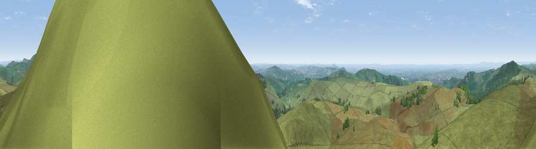

Viewpoint near Allgreave
#4203 in England · top 2% of its area beats it · near AllgreaveWhere it is
The exact computed spot (SJ 97612 69550). Click the marker for map links.
The view, rendered

A 360° render of this exact spot computed from the terrain model, tree cover and land cover — summer colours, afternoon light, calibrated against photographs of famous viewpoints. Real trees, hedges and buildings will differ in detail.
The panorama
Grey silhouette: terrain skyline in each direction (720 bearings, Earth curvature and refraction included). Dashed green: skyline with trees (+15 m) and buildings (+8 m) as obstacles. Blue strip: how far the ground is visible on each bearing.
Where the view opens
Wedge length = distance to the farthest visible ground on that bearing (vegetation-aware). Rings at 10, 25 and 50 km.
What fills the view
90% grassland · 9% woodland ·
Angular shares of the visible panorama (visual magnitude), not map area. Landscape diversity 0.16 (0–1 Shannon).
Key numbers
More beautiful places nearby
The staircase of upgrades: each row has a higher view potential than everything closer. Driving times are estimates from straight-line distance, calibrated against real road routing — check an actual route before setting out.
| Place | Direction | Drive | Score |
|---|---|---|---|
| Shining Tor | NNE · 5 km | ~10 min | 72.7 |
| Viewpoint near Meerbrook | SSE · 6 km | ~13 min | 73.5 |
| Viewpoint near Timbersbrook | SW · 9 km | ~18 min | 74.4 |
| Viewpoint near Mow Cop | SW · 17 km | ~29 min | 78.9 |
| Viewpoint near Mow Cop | SW · 17 km | ~30 min | 80.2 |
| Viewpoint near Harthill | WSW · 49 km | ~69 min | 80.5 |
| White Brow | NW · 53 km | ~75 min | 82.9 |
| Viewpoint near Little Wenlock | SSW · 70 km | ~93 min | 84.2 |
53.22299, -2.03722 · source: screening · position refined by local search. Computed location — check access rights before visiting.